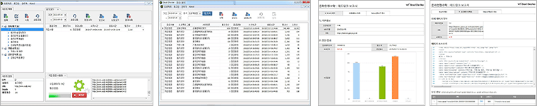

데드체커(WS-Dead Checker)솔루션의 특징
Dead Checker 솔루션은 웹 데드링크 분석에 성능이 최적화되어 있으며, 웹 사이트의 내부링크 또는 외부링크에 대한 링크 유효성을 점검하며 링크 오류에 대한 소스의 위치를 확인하여 수정할 수 있도록 제공합니다.
데드체커 솔루션 및 보고서 샘플 화면

솔루션 및 보고서 샘플
주요 제공 기능
구분별 상세기능
| 구분 | 상세기능 |
|---|---|
| 프로젝트 관리 | 프로젝트 등록(추가/삭제/수정), 진단 사이트 등록(추가/삭제/수정) |
| 진단 수준 설정 | 프로젝트 및 진단 사이트 선택, 진단 수준 설정 (하위 Depth, 진단 페이지 수, 타임아웃, 제외페이지 설정) |
| 진단 범위 설정 | Form link, js link, CSS link, robot.txt |
| 진단 방법 설정 | 즉시 진단, 스케줄 진단 (예약 및 일, 주, 월 반복 가능) |
| 보고서 | 진단 사이트의 데드링크 보고서 |